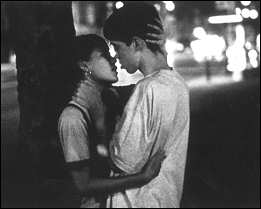

|
Kids
review by Carrie Gorringe, 1995
It is certain that the cinematic
debut of photographer-turned-director Larry Clark, Kids, is controversial, but
what is less certain is whether or not the controversy stems from Clark’s
uncompromisingly grim assessment of contemporary blue-collar urban youth culture or the
response to it by a majority of film critics. These critics, including the ever-ready
Siskel and Ebert, have praised the film for what they believe to be its
"realistic" portrayal of teenagers going to hell in a handbasket. Kids
follows the adventures of two extremely unpersonable young men, Telly (Fitzpatrick) and
Casper (Pierce) over the course of a twenty-four hour period. Both Telly and Casper, in
the space of approximately sixteen years of living, have managed to develop their own
hardly unique style of sociopathology. Telly has decided that the safest way to sate his
hyperactive sex drive in the age of AIDS is to deflower prepubescent girls. He
accomplishes this in the time-dishonored tradition of telling them precisely what they
want to hear -- that they are beautiful, that he loves them, and so on and so forth, ad
nauseam. After his perfunctory performances, he brags about his "seduction" of
these girls to Casper in the most misogynistic manner possible (although it is more like
rape, given his indifference to his partners’ obvious physical pain). Unbeknownst to
this tenth-rate teenage Don Juan, he has already contracted the HIV virus; instead of
saving himself from AIDS, he is insuring that the first sexual experience of his naive
partners is not only humiliating and miserable, but literally their last. Casper is only
slightly less self-preserving in his behavior; his idea of a good time involves downing
several 40-ouncers of malt liquor and relieving himself on public streets (this
overindulgence in alcohol is nothing new at any socio-economic level -- ask any university
student -- but we know that Casper’s behavior is being privileged as
"deviant" from the mainstream because Clark frames him in a one-shot
medium-close-up as he urinates). Collectively, the two indulge in drug-taking, theft and
beating a man almost to death, operating with seeming impunity.
In the midst of this frenetic anti-social activity, one of Telly’s ex-girlfriends,
Jennie (Sevigny) has discovered the little "gift" that Telly has left her, and
the rest of the film alternates between Telly and Casper’s activities and
Jennie’s attempt to confront Telly with the truth. Her search for him finally leads
her to an out-of-control house party (is there any other kind?) where Telly is attempting
to deflower yet another young girl -- the sister of one of his friends. Clark sets up this
alternating narrative structure by increasing the editing between scenes to the point
where each scene is progressively shorter, much like a pre-1920s melodrama. This structure
becomes so obvious that the audience is tempted to ask the burning question: Will Jennie
get to the house party before the dastardly villain Telly can do his dirty deed yet again?
Without giving too much of the game away, let’s just say that Clark reserves several
nasty shocks for the end of the film. Casper is rightfully concerned when he wakes up on
the morning after and delivers the film’s coda: "Jesus Christ, what
happened?"
As stated earlier, the central issue revolves around the presumed "realism"
that this film provides. Apparently Kids was a huge hit at Cannes; judging from
the uniform praise issued, it would suggest that every notable critic sat in the same
hotel room or bar, post-screening, and wrote his or her review via consensus. The response
might also confirm the belief of Messrs. Herrnstein and Murray (they of the equally
controversial work, The Bell Curve) that members of the cognitive elite speak
only to themselves. In fact, to understand that book is to understand the central message
that these critics accept as fact and which informs their perception of the film. Leaving
aside the very problematic issue of racism in The Bell Curve, one is left with
Herrnstein and Murray’s pessimistic prediction of a society in constant
socio-economic polarization, populated by the haves (the aforementioned "cognitive
elite," who have access to the best education, the latest technology and information)
and the have-nots, who slide further and further into social, economic -- and, more
seriously, moral -- decay. Most important of all is the ways in which these groups
commingle, thereby perpetuating this polarization. The elites intermarry with their own
kind; the have-nots simply degenerate into further immorality, producing illegitimate
offspring who have no hope of rising above their origins. In sum, they live in the modern
equivalent of Hobbes’ state of nature, and, ironically enough, do so right in the
middle of civilization.
Yet, American critics of The Bell Curve chose by and large to ignore the
ramifications of this particular aspect of Herrnstein and Murray’s argument,
concentrating instead upon what they perceived to be the authors’ excessive emphasis
upon presumed links between race and intelligence. Important though it was to call
attention to any possible attempt to resurrect the eugenics movement, the critics’
silence concerning the socio-economic polarization is telling. It’s telling because,
as evinced earlier in the description of Casper’s drinking habits, the so-called
moral deviance is present at all levels of society; recent surveys seem to demonstrate
that drug use in the United States is rising fastest among teenagers in the middle classes
and above, not among those at the very bottom of the socio-economic ladder. But the main
focus of Kids is centered exclusively upon the moral deviance of the lower
classes, as if this were the only pocket of humanity which is the source of all of the rot
in American society.
And yet, a brief trip back into social history provides a rather interesting parallel.
The not-so-subtle fear over what Kids represents for American society in the
mid-1990s is not unlike the fear and titillation experienced by late-Victorian writers in
both England and America concerning the appearance and expansion of urban slums. Works
like Jacob Riis’ How the Other Half Lives, and Jack London’s People
of the Abyss, among others, documented the degradation of human life found there in a
tone combining salacious detail with an unspoken dread that the miasma of immorality, if
not checked, might spread to infect "decent" society (never mind the fact that
there was a large segment of "decent" society which tolerated prostitution as a
necessary evil under the guise of the pernicious "double standard," cracking
down upon it only when necessary in order to keep up appearances). It is this
neo-Victorian stance, with its admixture of repulsion and voyeurism, which allows
contemporary film critics to accept Kids as a legitimate assessment of what is
truly going on in the inner cities, and, despite the best intentions, temporary outrage
over revelations of any sort rarely translates into concrete social change. And if, as Kids
suggests, Telly and Casper’s behavior is attributable in part to bad parenting, then
no family, it must be concluded, is immune to the siren song of bad behavior, regardless
of its status. But the film can’t bring itself to address that obvious conclusion.
Like Telly with his young girls, Kids tells the critics (themselves part of the
"cognitive elite") exactly what they want to hear and see, allowing them to live
vicariously through Telly and Casper’s exploits, their illusions about the
"true" origins and scope of deviant behavior kept intact.
This mindset, which might charitably be referred to as ambivalent, is borne out in
Clark’s pseudo-cinema-verite camera style, as it purports to tell us how life in the
urban center really is for the underprivileged. Unfortunately for Clark, he undercuts
himself; in using long, slow pans to compel the audience to see everything, Clark allows
its members to see too much. Kids contains the leer of the sensualist in
capturing social ills as often as it does in depicting Telly and Casper’s outrages;
indeed, the rape scenes are perhaps the most beautifully lit and shot in the entire film,
despite their overwhelming emphasis upon degradation. Like that of Casper, Telly’s
behavior at these moments is given the star treatment, always privileged in the frame in
close-ups, as if it were unique and somehow daring. Perhaps this is by design; in the 31
July 1995 issue of the New Yorker," Clark is quoted as having written in
1974 that "[I] Always wished I had a camera when I was a boy. Fucking in the back
seat, Gangbangs ... A little rape...." In this interview and others, Clark has stated
that the motivation for making Kids springs from his newly-emergent concern for
the state of the world in which his young children will grow up. Unfortunately, whatever
good intentions Clark might have brought to this project have been negated by his urge to
wallow in an elegiac prurience about what never was.
Like the critics, Clark wants to have it both ways, although one must ask just what
sort of mentality is at stake in an individual who can treat gangbangs as a mere rite of
passage without any sense of commiseration for doing so. Clark’s not-so-hidden rage
against women is the type of rage one finds in men so socially dysfunctional that they
couldn’t get laid if their lives depended upon it, or who have to resort to having
sex with underage girls because older women can see right through them. Telly and Casper
are two examples of this type and Clark, through his depiction of them, is asking the
audience to admire their prowess while being horrified at the power of destruction they
possess. It’s an attitude Clark knows well, having mastered it most famously in his
photographic collection of the dispossessed entitled, Tulsa (1971). But, in Kids,
the conceit doesn’t work; the so-called powers of destruction evident in Telly and
Casper are derived from the cowardice of the truly impotent; they prey only upon those
weaker than themselves, and their futures are fairly finite in scope, so what is there to
fear from them unless you’re unfortunate enough to live alongside them? There may be
others like them, it’s true, but the film seems to suggest that, given these
children’s penchant for self-destructive behavior, they’re all destined to go
the same route. There also seem to be no people with redeeming qualities, aside from
Jennie (and hers is a deathbed redemption) in Telly and Casper’s world, so who is
worth saving? Why should anyone care? If Kids has any redeeming feature, it is
the manner in which it asks if societies should have a group of throwaway people, but the
audience can come to that extremely relevant question only after cutting through the
prurience with a machete, and the film doesn’t provide any sort of thematic
justification for exerting much effort on its behalf.
Kids also has other problems. Structurally, the film is sloppy, a situation
primarily attributable to the screenplay, written by nineteen-year-old novice screenwriter
Harmony Korine. In interviews, Clark has heaped praise upon Korine’s script and his
encyclopedic knowledge of film, claiming to have filmed the screenplay exactly as written
and speculating that Korine could be the next Martin Scorsese (a rather artful reference
on Clark’s part, since it is known that Scorsese was influenced by the visual style
of Clark’s Tulsa when making Taxi Driver).
Unfortunately, Korine’s knowledge of film content does not seem to translate into an
effective understanding of how film works upon an audience and the narrative degenerates
into melodrama; the "last-minute chase" between the mortally-wounded Jennie and
the about-to-mortally-wound Telly falls flat. The audience can’t care about the fates
of these characters merely because, for all of their nastiness, they are quite simply and
pathetically boring. Kids is nothing more than a pale imitation of other
coming-of-age films set in dire circumstances. I would call it "The 400 Blows
Meets Los Olvidados", possessing none of the elegance, intelligence or power
of either. Renting those films, instead of wasting money on this insidious and dishonest
mess, would be a much more fruitful endeavor.
|
|
Directed by:
Larry Clark
Starring:
Leo Fitzpatrick
Justin Pierce
Chloe Sevigny
Written
by:
Larry Clark
Harmony Korine
FULL
CREDITS
BUY
VIDEO
|
[Shared Documents/General/Website/mediabar/mb.html]
|